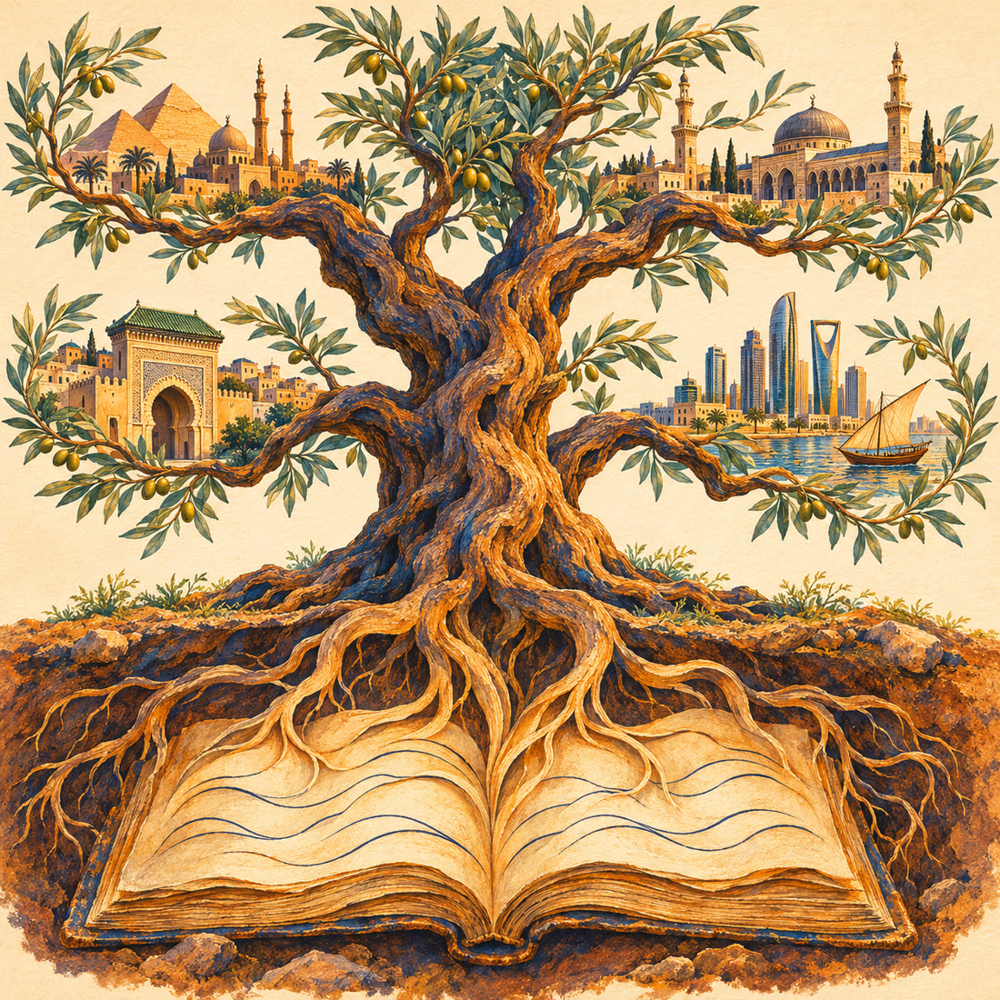
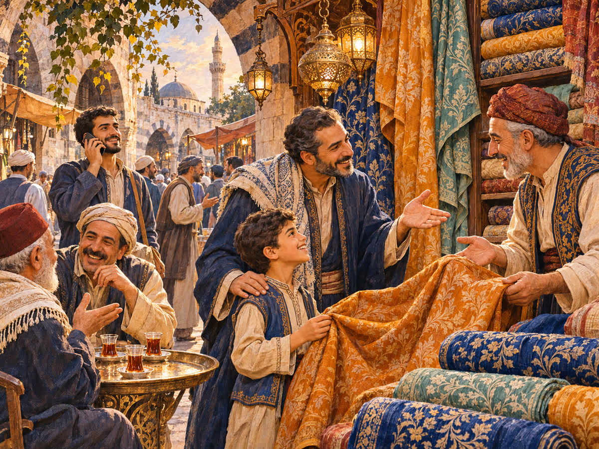
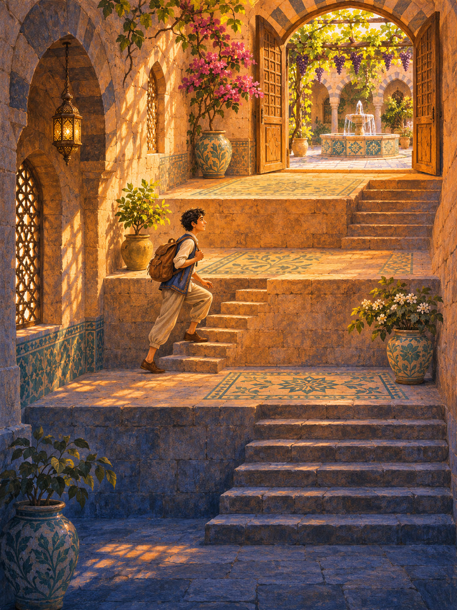
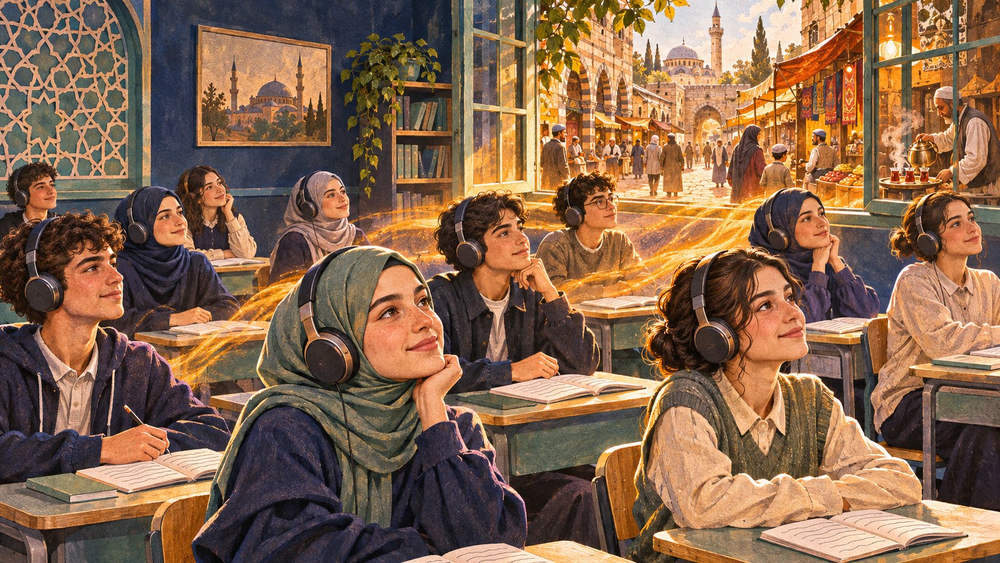
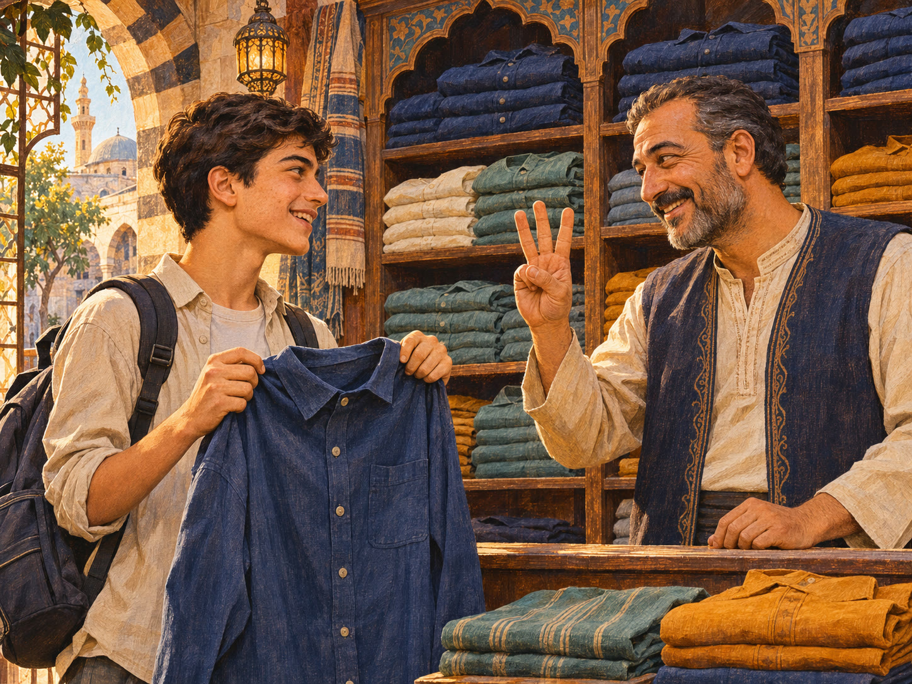

Arap çocuğu evde ammiceyi, okulda fasihi öğrenir. Yabancı öğrenciye hangisini, hangi beceride, ne zaman öğretmeli? Dünyanın cevapları, rakamlar ve bir program önerisi.
Kitapta öğrettiğimiz fasih cümle, Kahire'de, Şam'da, Riyad'da ve Fes'te bambaşka duyulur. Bir ifade seçin. Ağaç, lehçe biçiminin hangi fasih kelimeden aşınarak geldiğini gösteriyor.

Lehçe kelimelerin çoğu fasihin aşınmış biçimidir. Şam ağzındaki شو sözünün kökü شيء هو, بدّي sözünün kökü بودّي ifadesidir. Fasihi bilen öğrenci lehçeyi çözmeye yarım adım yakındır. Köken notları yaygın kabul gören açıklamalardır; lehçe biçimleri bölge içinde de değişir.
Fasih Fas'tan Umman'a aynı yazılır ve okunur. Konuşma ise kabaca beş aileye ayrılır; uzak aileler birbirini zor anlar. Ülkelerin üzerine gelin ya da bir aile seçin.
Harita sınırları Natural Earth (world-atlas 50m) verisinden; lehçe aileleri kabaca ve öğretim amacıyla gösterilmiştir, ülke içindeki farklılıklar dahil değildir.
Okulda öğrenilir. Kur'an, kitap, gazete, haber bülteni, hutbe, resmî konuşma.

Evde ana dil olarak edinilir. Aile, arkadaş, çarşı, dizi, şarkı, sosyal medya.
"Toplumun hiçbir kesimi gündelik sohbette Yüksek çeşidi kullanmaz."
Charles A. Ferguson, "Diglossia", Word 15 (1959) tezinin özeti
es-Saîd Bedevî (1973), مستويات العربية المعاصرة في مصر. Örnek cümleler Şam bölgesi üzerinden temsilîdir. Gerçek konuşmada kişiler aynı cümlede basamak değiştirir: Mısır'daki panel konuşmalarında fasih ve ammice yapılar iç içe kullanılır (Mejdell 2006).
Filistinli 5 yaş çocukların konuşmasından çıkarılan 4.500 kelime. Fasihle ammice iki ayrı dil gibi değil; ortak bir gövdeleri var.
Saiegh-Haddad & Spolsky (2014), Handbook of Arabic Literacy, Springer. Tek lehçe, tek yaş grubu.
ABD Dışişleri Okulu (FSI): İngilizce konuşan bir diplomatın sıfırdan profesyonel yeterliğe (ILR 3, kabaca C1) gelmesi için gereken ders saati. Arapça en zor grupta.
Bu rakam Türk öğrenciye doğrudan uymaz. Hedef C1, ölçü İngilizce konuşan yetişkin ve programda bir yıllık ülke içi eğitim var. Türk öğrenci harfleri Kur'an'dan tanır, Türkçede yaklaşık 6.500 Arapça kökenli kelime kullanır.
ABD Savunma Dil Enstitüsü (DLIFLC) on yıllarca önce fasih, kursun sonunda lehçe öğretti. 2009'da ilk gün lehçeyle başlayan 64 haftalık deneme sınıfları açtı (Irak, ardından Şam ağzı). Mezuniyette hedefe ulaşan öğrenci oranları:
Enstitünün çıkardığı ders: lehçeyle başlayınca fasih okuma geriliyor. Sonraki sınıflara ilk günden günde bir saat fasih eklendi. İki çeşit birlikte öğretilebiliyor ama ders saatini paylaşmak zorundalar.
DLIFLC Globe, Ekim 2010 (Irak pilot sınıfı 26.02.2009 – 24.06.2010).
Çubuklar, öğrencinin üretim yaptığı (konuştuğu ve yazdığı) dilin kabaca dağılımını gösteriyor: ■ fasih ■ karma kayıt ■ ammice. Ayrıntı için bir satıra dokunun.
İkisini birlikte öğretmenin kafa karıştırdığını gösteren bir çalışma yok. Küçük laboratuvar çalışmalarında (26 ve 56 kişi) kelime öğrenmede anlamlı fark çıkmadı.
Uzun soluklu sonuç çalışması yok. Tek büyük saha verisi DLIFLC'nin: lehçe kazanılıyor, fasih okuma bir miktar geriliyor.
Fasihi bilen öğrencilere ortak kök eğitimi verilince tanımadıkları lehçeyi anlama oranı %51'den %71'e çıktı (Soliman 2014, küçük örneklem).
"CEFR iletişimseldir, sokağı hedefler" diye düşünülür. Metne yakından bakınca iki şey çıkar. CEFR toplumdilsel yetinin tanımında "lehçe ve aksan"ı sayar ama bunun için tek bir tanımlayıcı yazmaz. Ayrıca resmî ve gayriresmî kayıt arasında seçimi ancak B2'de bekler. B1'e kadar istenen "nötr kayıt"tır.

CEFR Ek Cilt'te aracılık ölçeklerinin önündeki not: A dili ile B dili "iki ayrı dil, aynı dilin iki çeşidi, aynı çeşidin iki kaydı ya da bunların bileşimi" olabilir; kullanıcılar uyarlarken çeşitleri belirtebilir.
Bu not, "ammice bir sesli mesajı dinleyip fasih ya da Türkçe aktarır" gibi bir öğrenme çıktısını doğrudan meşru kılar.
Council of Europe, CEFR Companion Volume (2018/2020).
Dinleme tanımlayıcıları sık sık "standart konuşma dili" der (B2: "gürültülü ortamda bile standart konuşma dilinde söyleneni ayrıntılı anlar"). Arapçada bunun ne olduğu tanımlı değil.
İspanya'da Ocak 2026'da akademisyenler Avrupa Konseyi'ne "Standart yalnız fasih mi demek?" diye dilekçe gönderdi. Arapça için CEFR Referans Seviye Tanımları da henüz yok.
change.org dilekçesi (11.01.2026); Soliman & Familiar (2024).
Dünyada lehçe öğretimini savunan araştırmaların çoğu, Arap ülkesinde yaşayıp çalışacak Amerikalı üniversite öğrencisini, diplomatı ya da askeri hedefliyor. İmam Hatip'teki öğrencinin ihtiyaç haritası farklı.
MEB ders kitabı inceleme ölçütü KRT 6.2.4: yabancı dil kitapları "öğretim programında temel alınan lehçeye özgü kullanım şekline uygun" hazırlanmalı.
Oysa 2–4, 5–8 ve AİHL 9–10 Arapça programlarında "fasih", "lehçe", "ammice" kelimeleri hiç geçmiyor. Tavan seviye A2.2, B1–B2 için program yok.
Yeni bir A1–B2 programı dil çeşidini açıkça yazmazsa kitap yazarı neye uyacağını bilemez; inceleme paneli tek bir ammice kelimeyi hata sayabilir.
Musa Alp (2011): Fasih esas olmalı; ammice "az da olsa" öğretilmeli ama "sınırı iyi çizilmeli". Lehçe seçilecekse diziler sayesinde tanıdık olan Suriye ağzı.
Taranan Türkçe literatürde tam lehçe öğretimini savunan bir çalışma bulunamadı. Endonezya, Malezya, İran ve Pakistan'da da hedef fasih; lehçe yalnız bazı üniversitelerde seçmeli.
Alp, M. (2011). Ç.Ü. İlahiyat Fak. Dergisi 11(2): 87–110.
Her ölçütün sizin için önemini kaydırın. Seçeneklerin 1–5 puanları bu çalışmanın değerlendirmesidir; gerekçeleri tam raporda. Kendi puanlarınızla sınamak için ağırlıklarla oynayın.

Dinleme, okuma, konuşma, yazma: ölçülen her çıktı fasih. Dinî metin, sınavlar ve öğretmen kadrosuyla tam uyum.
Kelime sonlarında i'rab harekesi söylenmez; fasih ve lehçelerde ortak kelimeler seçilir (بكم، طيّب، تفضّل). Bir Arap bunu düzgün konuşan biri gibi duyar.
Her ünitede aynı sahne Şam ağzıyla dinletilir; öğrenci tanır, üretmez, sınava girmez. B2'de kayıt farkı; B1–B2'de aracılık.
"Programda temel alınan dil çeşidi, Kur'an-ı Kerim'in ve yazılı Arap kültürünün dili olan fasih Arapçadır (Modern Standart Arapça). Sözlü üretimde fasih Arapça, cümle sonlarında vakıf yapılarak doğal konuşma akışıyla kullanılır. A2 seviyesinden itibaren öğrencilerin Arap dünyasındaki gerçek iletişim durumlarını tanıması için yaygın ammice karşılıklar, yalnız dinleme/izleme amacıyla ve 'kulak penceresi' etkinliklerinde verilir. Bu karşılıklar üretim ve ölçme hedefi değildir; ders kitabında görsel olarak ayrı bir bölümde sunulur."
CEFR sunumlarında sık kullanılan çarşı örneği, bu modelle iki katmanlı kuruluyor: öğrencinin konuştuğu gövde ve yalnız dinlediği pencere.

Cümle sonları vakıflı: لِيرَة denir, لِيرَةٌ denmez. Şu kelimeler hem fasihte hem bütün lehçelerde yaşıyor: بِكَمْ، طَيِّب، تَفَضَّل، شُكْرًا.
Görev: Öğrenci dinler, fiyatı ve müşterinin kararını işaretler. Sonra iki metni yan yana koyup benzeyen kelimeleri eşler: كثير ← كتير، ثلاثين ← تلاتين، هذا ← هاد. Ölçme dışıdır.
Örnek diyaloglar bu çalışma için yazıldı; kitaba girmeden önce ana dili Arapça bir redaktörce kontrol edilmelidir.
Cambridge'in İngilizce için verdiği birikimli rehberli öğrenme saatleri (A1 ≈95, A2 ≈190, B1 ≈375, B2 ≈550) bir Arapça zorluk katsayısıyla çarpılıyor. Katsayı tahmindir: İngilizce konuşan biri için FSI oranı yaklaşık 2,9; Türk öğrenci için çok daha düşük olması beklenir.
Rehberli öğrenme saati ders saatinden fazlasını kapsar (ödev, gözetimli çalışma); sonuç iyimser okunmalı. Karşılaştırma: AİHL 9. sınıf Arapça programı yılda 144 saat, 9–10 programının hedefi A2.2.
Yönetici özeti, dilbilim, dünyadaki yaklaşımlar, araştırma bulguları, CEFR metni, Türkiye bağlamı, seçeneklerin puanlanması, program önerisi ve kaynakça. Her bilginin yanında kaynağın güven düzeyi.